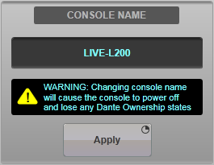
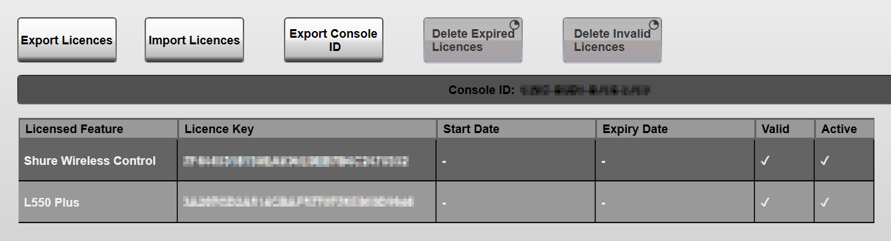

System Settings
To access system level functions go to the MENU > Setup > System / Power page (labelled System in SOLSA). These settings are saved on the console (not in the user showfile). Most settings are located in the System tab of this page. For licensed feature, please see the Licensing section below.
Operating Level
Double-tap the value to alter the analogue line operating level between +12 to +24 dBu. +24 dBu is the default setting.
This setting determines the dBu level that equates to 0 dBFS in the console (all console metering is referenced to 0 dBFS).
For example, using the Operating Level of 24 dBu, a 20 dBu input signal will meter at -4 dBFS. Similarly, outputting a -6 dBFS signal will equate to a +18 dBu signal on the analogue outputs.
Note: The MADI stagebox and local I/O outputs can be trimmed relative to the operating level on a per-device basis. This can be done by selecting the relevant stagebox or Local I/O card in the I/O Setup page and using the Output Trim slider. Please see the Local & MADI I/O Config section for further details.The operating level of SSL Network I/O Dante stageboxes can also be configured on a per-device basis. Please see the Network I/O Devices section for further details.
Sample Rate
The system can operate at 96 kHz (recommended) or 48 kHz sample rates. Press & hold the relevant button to change the sample rate of the console.
Important Note: Changing the sample rate of the console will cause changes to the I/O configuration and any existing routing may therefore be lost. The sample rate should therefore be set before configuring other elements of the console.Each stagebox must be configured to run at the same sample rate as the console. Please refer to the Clocking section for further information.
Important:The console MUST be power cycled following a change in Sample Rate.
Console Name

The Console Name can be edited here. This is the name referenced when connecting to the console from a remote surface (SOLSA, TaCo or another console in remote mode).
The Control ID (visible in MENU > Setup > Options > NETWORK tab) is used to determine the name of the console when owning Net I/O device parameters. But the Control ID is also taken from the Console Name.
Double tap on the name field to edit the console name, then press and hold Apply.
Please Note:Changing the console name will cause the console to power off and all Ownership of Net I/O device parameters will be lost. This means any previously owned inputs (or other settings) will need to be manually re-owned before control will be re-established. For instructions on owning inputs and stagebox settings please see Controlling Net I/O Stageboxes and Ownership.
Hardware Config
The Rebuild Hardware Configuration button is used to configure the console for use with Remote Tiles.
For more information on setting up Remote Tiles please see Setup: Remote Tile.
Surface
These elements of the console can be restarted without affecting audio. Only use if the element is unresponsive or if instructed to do so by SSL.
Please note refreshing the Front Panel takes approximately two minutes, during which time there is no user control.Fader Calibration
If the fader position falls out of alignment from the values displayed, pressing & holding Calibrate Faders in Surface will recalibrate the faders. Audio will continue to pass but faders will be disconnected from audio control during this process, which takes approximately 30 seconds.
Data Backup
Should you encounter a technical problem, SSL may request the console log files for analysis. If logs are requested, insert a USB drive (formatted at FAT32 or NTFS) into the console and press the Data Backup button to save the log files and backup showfile to a timestamped folder under a 'SSL\Live\DataBackup' subfolder on the USB drive.
Admin Access
For SSL real time remote support. Press & hold the Admin Access button to retrieve the response code when requested by SSL.
Note: We strongly recommend you do not operate any other buttons in the System page without specific instructions from SSL.Licensed Features
Some features on the console are licensed. Please contact SSL for details. The Licensing tab allows these licenses to be managed.
When requested to do so by SSL, insert a USB stick (formatted as FAT32 or NTFS) and use the Export Console ID button to copy the Console's unique ID to the USB stick.
Send the Console ID file to SSL.
Copy the licence file(s) received from SSL to a USB stick (formatted as FAT32 or NTFS) and use the Import Licences button to copy the licence(s) from the USB stick to the console.
Imported licences will be shown in the list. If a licence does not match the Console ID it will not be imported.

If the console's system time and date fall outside that of the licence start and expiry dates, the licence will show as inactive and the feature will not be available.
If the console hardware changes, the console ID will change and licenses will show as invalid (i.e. licensed features will not be available). Please contact SSL Support in this instance.
Useful Links
System OptionsIndex and Glossary